魔界塔士Sa・Gaの世界観
はじめに
この記事は、サガ好きの管理人が河津さんのツイートやゲーム内の情報などをもとに魔界塔士サガの世界観を整理してみたものです。
世界観以外にも、食肉後に何のモンスターに変身するかを算出するツールやモンスター変身の仕組みの解説、変身可能モンスターの一覧なども作ったりもしています。こちらにまとめているので是非使ってみてください。
魔界塔士サガってどんなゲーム？
魔界塔士サガは1989年12月15日に発売されたゲームボーイ(GB)のソフトで、携帯ゲーム機向けソフトとしては初めてのRPGです。
当時のGBのカートリッジ容量は2メガビット（＝256キロバイト）で、現在ではスマホで写真1枚でも取れば余裕で超えてしまうほどのごく小容量。こんな小さい容量のGBでRPGなんて不可能だと言われている中で開発されたソフトでした。しかしながらこの魔界塔士サガは、結果的にはスクウェア初のミリオンヒット作品で、シリーズ化されるほどの人気となりました。
ゲームのシステムも当時としてはかなり斬新で、RPGなのにレベルの概念が無かったり、モンスターを仲間にして、敵がたまに落とす肉を食べることで違うモンスターに進化するなど、独特なシステムを採用しています。
30年以上も前（2023年5月7日現在）のゲームですが、今では Switch や iOS, Adnroid, Steam で SaGa COLLECTION という形で手軽にプレイできます。未プレイの方も子供の頃プレイしたという方もプレイしてみてはいかがでしょうか。
世界観
魔界塔士Sa・Gaの世界では、世界の中心に『塔』があります。以下のオープニングの画像にあるように、この塔は楽園に通じていると伝えられています。この塔の秘密に挑み、楽園を目指す者がゲームのタイトルになっている『魔界塔士』と呼ばれている者たちです。

この塔の中は時間が一定して流れておらず、時代の違う世界が多元軸に構成されているという設定があります。これはゲーム中の以下のセリフでも示唆されています。
（画像は塔の7階の石像の台詞）
実際、このゲームのシナリオを担当した河津さんは以下のようにおっしゃっています。魔界塔士サガは『多元世界を表現したゲーム』であり、その多元世界の中心にあるのが塔だということがわかります。
多元世界を目に見える形で表現したかったんですね。世界を繋ぐものが塔だったり柱だったりしたのです。 https://t.co/1ddM8Lif3f
— 河津秋敏 (@SaGa30kawazu) December 12, 2020
多元的に様々な世界につながっている塔を通じて、魔界塔士である主人公たちは様々な世界を目にします。大陸世界、海洋世界、空中世界、都市世界の4つの大きな世界と、いくつかの小さい世界です。
1階が大陸世界なのに5階は海洋世界。10階は空中世界なのに16階は都市世界。上に登っているにもかかわらず大陸の上が海だったり、空中の上が都市だったりと、地形を無視したつくりになっていますが、違う世界なんだから何でもありです。
何でもありなのは地形だけではありません。4つの大きな世界に待ち構えるボスキャラは中国の四神（玄武、青龍、白虎、朱雀）で、それを生み出したのは仏教のアシュラ（阿修羅）だったり、ボス以外のモンスターでは、北欧神話に登場するフェンリルや炎の巨人やヨルムンガンドル、メソポタミア神話のティアマット、旧約聖書のベヒーモスやリヴァイアサン、日本のおばけやブルブル、挙句の果てには「ぶとうか」とか「すもうレスラー」何て言う、もはや普通の人間なのでは！？と思う敵も登場します。
敵として登場するこれらのモンスターにこちらも変身できたり（残念ながらすもうレスラーにはなれませんが）、なんかもう、はちゃめちゃです。
でも、それがいいんです。このはちゃめちゃでいろんな世界観ごった煮のこの世界観こそが魔界塔士サガの魅力なのだと個人的には思っていますし、ゲームを作った側としてもたぶん狙ってそういう作りにしていると思います。なぜなら、塔を登りながら多様な世界を目にして『楽園』に辿り着いた主人公は何を思うのか？がこのゲームのテーマだと私は考えているからです。
以降、実際にどんな世界があるのかを見ていこうと思います。各世界のリンク先に地図を張っているので、プレイしていて迷子になった時などに使ってみてください。
大陸世界（1階）
- 大陸世界（1階）←地図
- 楽園（3階）←地図
- 地獄（4階）←地図
- 海洋世界（5階）←地図
- 石像（7階）←地図
- 病院（9階）←地図
- 空中世界（10階）←地図
- 渇いた世界（13階）と洪水の世界（14階）←地図
- 都市世界(16階)←地図
- 建築世界(18階)←地図
- シェルター(19階)←地図
- 記録室（20階）←地図
- 花畑（21階）←地図
- アシュラ(23階)←地図
- 真の塔
- 最上階←地図
この世界では3人の王が戦争をしています。鎧の王と剣の王と盾の王の3人です。
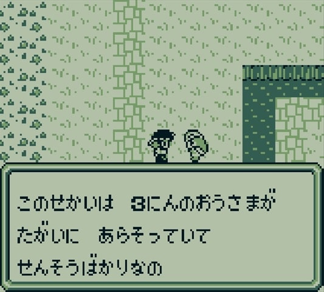
恋煩いの鎧の王と南の村で一番の美人。鎧の王は通りすがりの魔界塔士に突然恋の相談をしてしまう（笑）
なんかやばそうな盾の王・・・。

血の気の多い剣の王。
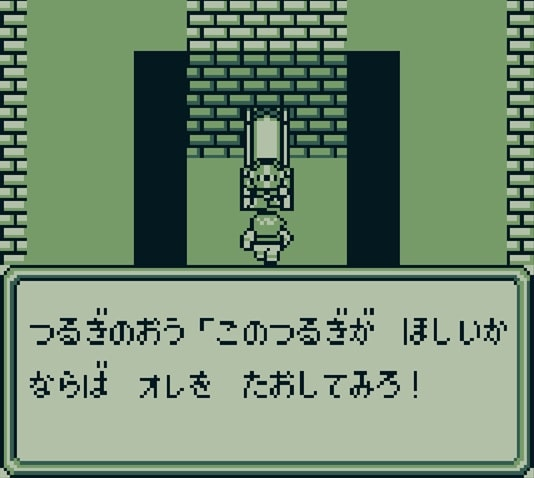
剣の王からキングの剣、鎧の王からキングの鎧、盾の王からキングの盾を手に入れ、英雄の町の英雄の像に捧げることで、塔を登るのに必要な「クリスタル」を手に入れることができます。
楽園（3階）
何もしなくても暮らすことができる世界。生きがいややりがいというものが恐らく存在しないこの世界は到底楽園とは言い難いでしょう。

地獄（4階）
辺り一面が針の山になっている苦行に満ちた世界。悪魔が支配している世界で、この世界の住民は「苦しみに耐えれば楽園に連れて行ってもらえる」と信じて、苦痛に耐えながら生きている。
「4匹の悪魔」に関する情報が得られる。4匹の内1匹は大陸世界で戦った玄武のこと。

楽園の上が地獄という構成になっていますが、ゲームを作る際のアイディア出しの段階でいろいろ意見を出した結果こういう構成になっているみたいです。
この辺はアイデア出しの段階で、みんなでいろいろ意見をだして構成を決めましたね。 https://t.co/aKAquLqRIM
— 河津秋敏 (@SaGa30kawazu) December 12, 2020
海洋世界（5階）
海上はもちろん海底にも人が生きている場所があります。
この世界は四天王の一人、青龍が支配する世界。竜王を追い出した青龍が支配している。
青龍の赤玉と竜王の青玉を手に入れ、アイテム欄から使用するとクリスタルが手に入り、次の世界に行けるようになる。
竜王が出題するなぞなぞと答え。
| 竜王の問題 | 答え | 購入場所 |
|---|---|---|
| 元気な人は痛くて、疲れた人は気持ちいいもの なんだ？ | 金の針 | 港町 |
| ロングソード2本と ゴールドかぶと3つと ポーション４個で何が買える？ | 青龍刀 | 港町、東の島の村 |
| 海に近いと小さくて 山に近いと大きいもの なんだ？ | 岩 | 東の島の村 |
石像（7階）
世界が多次元であることを示唆する謎の石像。
病院（9階）
病院。復活の館や宿屋があります。
入院？している人が、4匹の悪魔を支配している大悪魔のことを教えてくれます。
空中世界（10階）
びゃっこが支配する世界。白虎に対抗する組織、レジスタンスのリーダーだったシャルルの双子の娘である「ジャンヌ」と「ミレイユ」がクリスタルの鍵を握っており、白虎はそれを狙っている。
妹思いの姉、ジャンヌと、裏切りの妹、ミレイユ。ミレイユは白虎の側について姉のジャンヌを売ってしまう。
ミレイユはスクウェア三大悪女として知られている。
三大悪女について参考
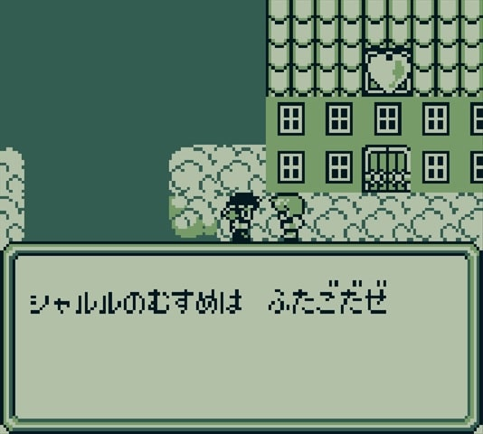

白虎は「クリスタル」という効果のない攻撃をしてくるのですが、バグとかではなく意図的に狙った行動らしいですね。
ストーリー的に狙った行動です。 https://t.co/BVG4sRsOVQ
— 河津秋敏 (@SaGa30kawazu) December 12, 2020
渇いた世界（13階）と洪水の世界（14階）
13階は、雨が降らないために地面が干乾びてしまい、苦しんでいるタコ達が住む世界。
14階は、水があふれ、水浸しになってしまっている世界。
13階と14階は繋がっていて、本来であれば14階の水が13階に流れていたが、水の流れが詰まってしまったために13階も14階も困ってしまっている。
詰まりを解消して助けてあげるというのがこの階のイベント。
13階（詰まり解消前）
14階（詰まり解消前）
詰まりを解消する主人公

13階（詰まり解消後）
14階（詰まり解消後）

都市世界(16階)
第16階層にある荒廃した都市世界。地下鉄が存在していたり、「アキバ」「アメヨコ」「シンジュク」といった見覚えのある建物や町もあり、
まるで東京を思わせる雰囲気を醸し出しています。
朱雀を倒してクリスタルを手に入れると塔を登れるようになります。


建築世界(18階)
アシュラのおかげで潤っている世界。台詞からして土木建築会社でしょうか。こういうのはいつの時代でも当てはまる話なんですかね。
そしてここで神の存在が示唆される。
シェルター(19階)
子供もその親も死んでいる救いのない世界。
記録室（20階）
過去に楽園を目指した魔界塔士がいつどこで絶命したのかが記録されている。
アーサー：11階 1919年03月21日
くろう ：13階 1950年02月18日
ハーン ：19階 1972年06月14日
ジーク ：06階 1924年02月12日
リズ ：12階 1980年01月28日
誰がなんのためにこんなことを記録しているのでしょうか。そして主人公（「おとこ」という名前にしている）はどこまで辿り着けるのか。
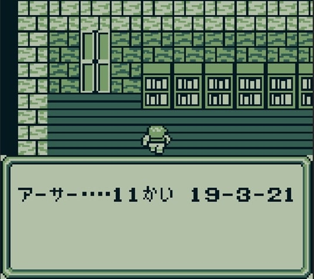
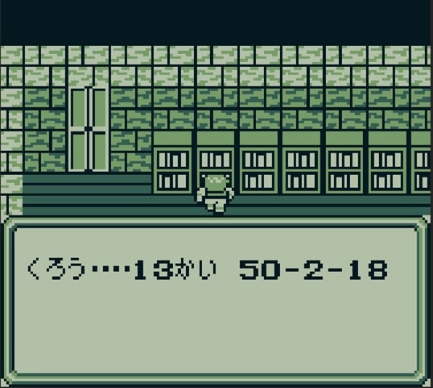
 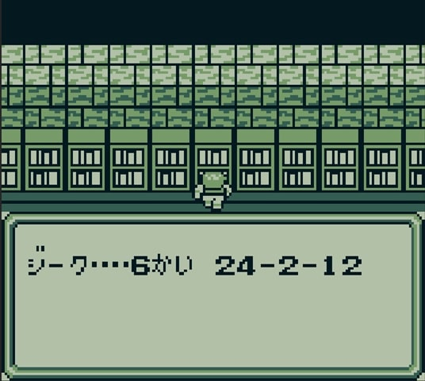
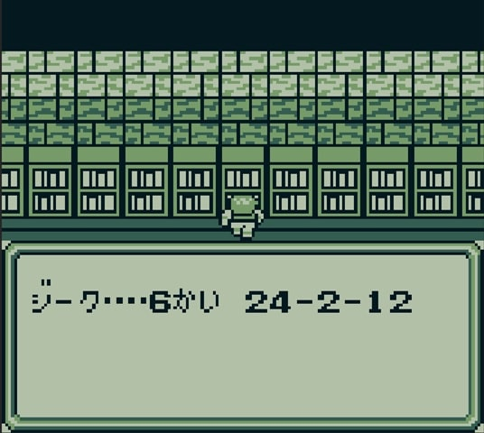
 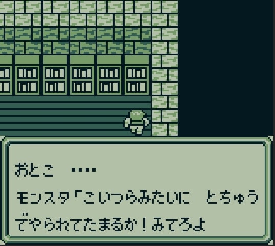
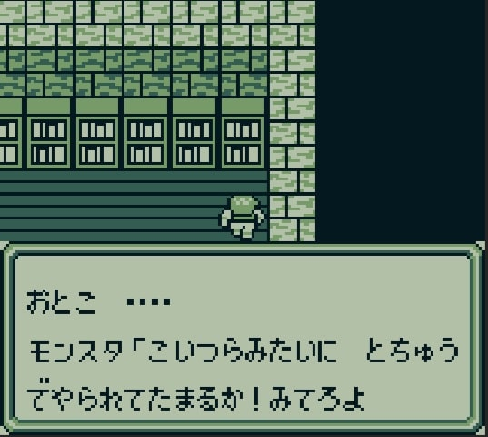
花畑（21階）
神に言われたことに忠実に、ただひたすら魔界塔士を待つ老人がいる世界。
アシュラ(23階)
アシュラがいるフロア。一部の人間はこのアシュラが四天王を送り出した大悪魔で、諸悪の根源だと認識しているようだが果たして・・・？
真の塔
この塔を登ると真の楽園がある・・・？
各世界で会った人たちがそれぞれ自分の道を見つけて生きていく姿を見て主人公は何を思うのか。
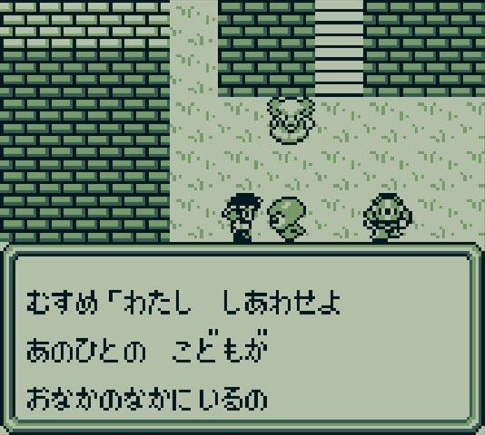
強力になった四天王を倒して最上階まで進む。

最上階
そして最上階。何も無い空間にかみがいる。全て神の掌の上で転がされていたのだということを知る。
 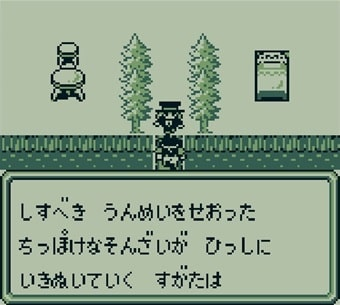
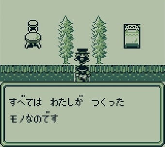
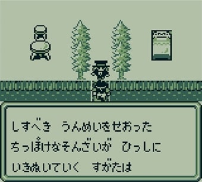
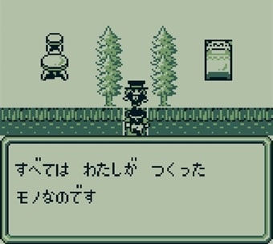


神を倒すと扉があり、その先に楽園があるかもしれないが、主人公が選んだのは「自分たちの世界に帰ること」。
いろんな世界があるけど、楽園なんてそんな都合のいいものはなく、今自分がいる世界を大切にしましょう。
ということを製作者は伝えたかったのかなと、個人的には解釈しています。
そんな都合のいい楽園なんかないんだ、というのがテーマなので、少なくとも扉の向こうが楽園でないのは確かですね。 https://t.co/j2pB2idObU
— 河津秋敏 (@SaGa30kawazu) December 12, 2020
バトルでは、「かみは しんだ」と出ますが、どうなんでしょうね。 https://t.co/Dwh5BqJuui
— 河津秋敏 (@SaGa30kawazu) December 12, 2020
という感じで独特な世界観の魔界塔士サガですが、最初にも書いた通り、今ならSaGa COLLECTION という形で手軽にプレイできるので是非プレイしてみてください。
以上
参考
- アニヲタWiki(仮) 塔(魔界塔士Sa・Ga)
- Wikipedia 魔界塔士Sa・Ga
- 魔界塔士Sa・Ga（GB）
- pixiv百科事典 スクウェア三大悪女
- ニコニコ大百科 スクウェア3大悪女
- 魔界塔士 Sa・Ga（The Final Fantasy Legend）のネタバレ解説・考察まとめ
- ゲームの里 魔界塔士サガ